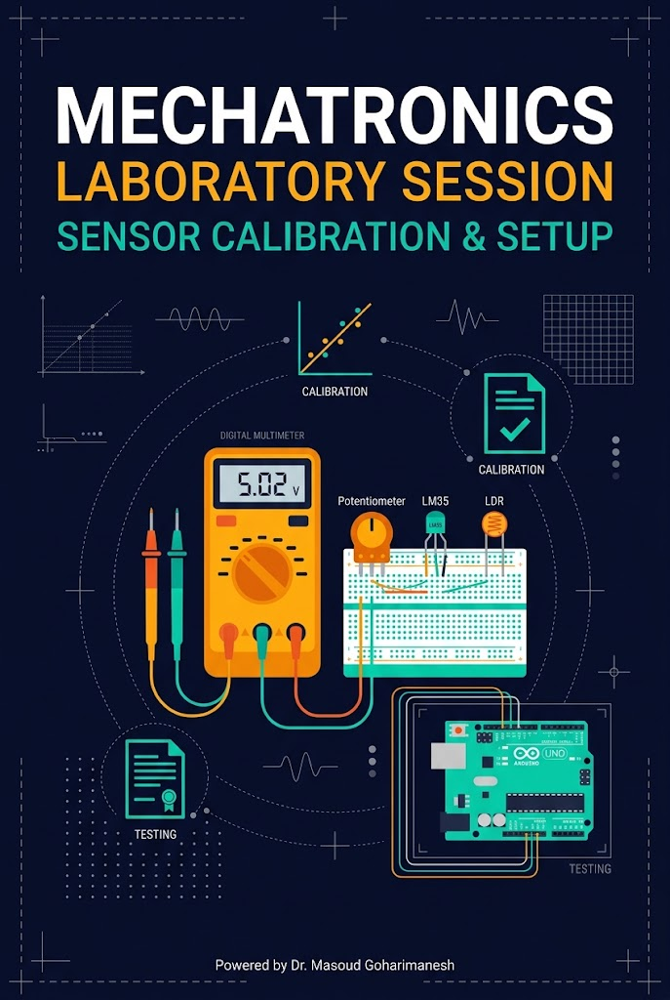
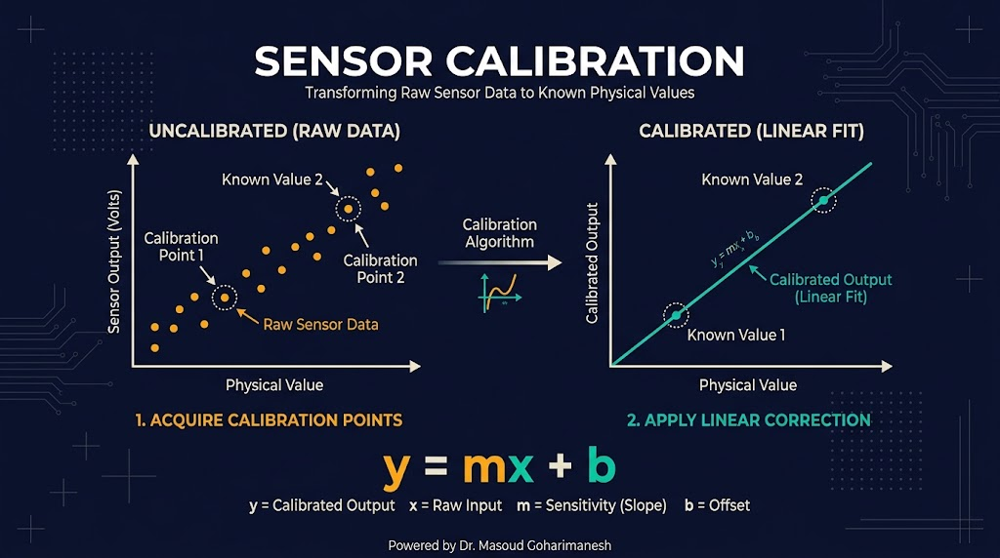
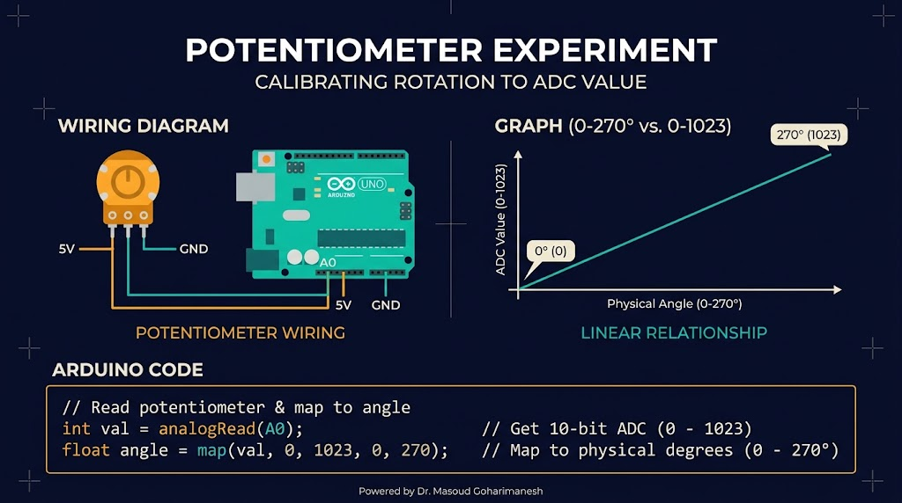
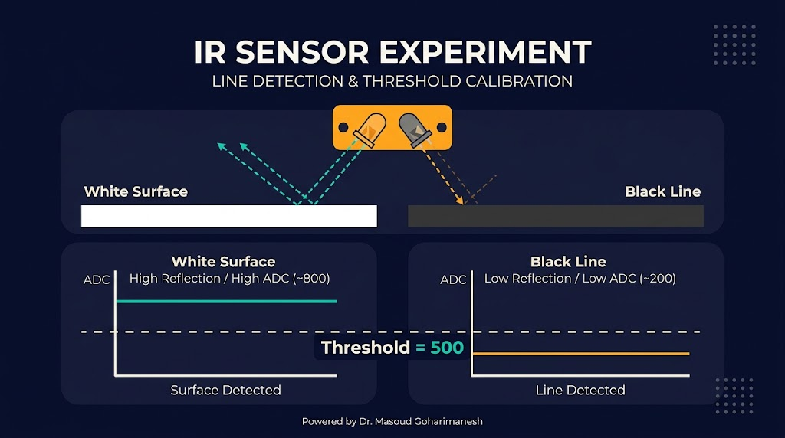
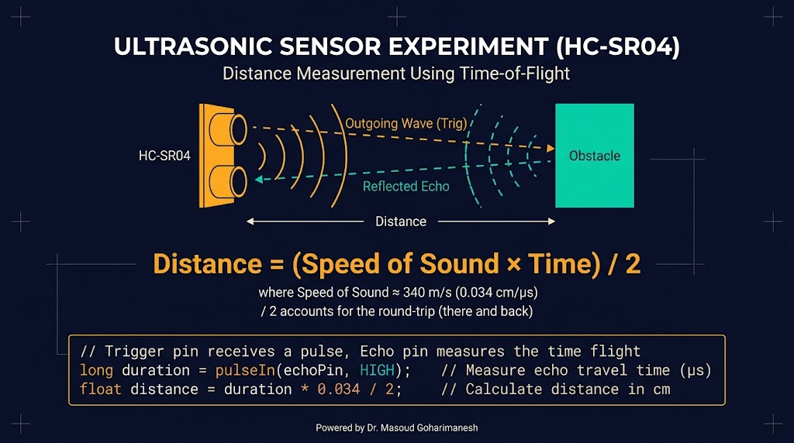
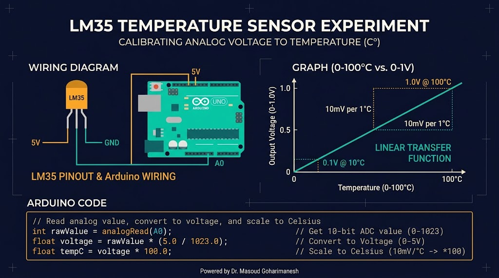
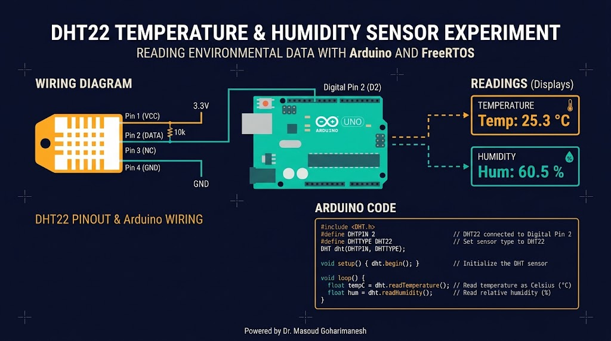
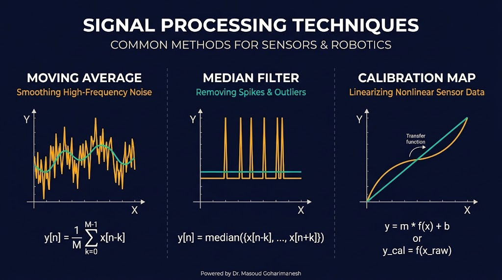

کالیبراسیون، راهاندازی، پردازش سیگنال
دکتر مسعود گوهریمنش
دانشیار گروه مهندسی مکانیک
دانشگاه تربت حیدریه | پاییز ۱۴۰۵
یک سنسور دقیق بدون کالیبراسیون، فقط یک عدد تصادفی تولید میکند!
اگر سنسور LM35 شما در دمای ۲۵ درجه، عدد ۲۴.۸ را نشان دهد، چه کار میکنید؟
مقایسه با مرجع و اصلاح خطا

کالیبراسیون فرآیند مقایسه خروجی یک سنسور با یک مرجع استاندارد و تعیین رابطه بین آنها است. با این کار، میتوان خطای اندازهگیری را کاهش داد و خروجی خام را به واحد فیزیکی واقعی تبدیل کرد.
نزدیکی به مقدار واقعی
تناسب خروجی با ورودی
پایداری در اندازهگیریهای مکرر
سه روش اصلی
اندازهگیری در دو نقطه معلوم و محاسبه خط راست بین آنها. ساده و سریع.
اندازهگیری در چند نقطه برای سنسورهای غیرخطی. دقت بالاتر.
فقط حذف خطای صفر (Offset). زمانی که شیب درست است.
سنسور موقعیت زاویهای

void setup() {
Serial.begin(9600);
}
void loop() {
int rawValue = analogRead(A0);
float angle = map(rawValue, 0, 1023, 0, 270);
Serial.print("ADC: ");
Serial.print(rawValue);
Serial.print(" | Angle: ");
Serial.print(angle);
Serial.println(" deg");
delay(100);
}
تشخیص خط و مانع

#define IR_PIN A0
#define THRESHOLD 500
void setup() {
Serial.begin(9600);
}
void loop() {
int value = analogRead(IR_PIN);
bool onLine = value > THRESHOLD;
Serial.print("IR: ");
Serial.print(value);
Serial.print(" | Line: ");
Serial.println(onLine ? "NO" : "YES");
delay(50);
}
نکته کالیبراسیون: مقدار آستانه (Threshold) را با تست روی سطح سفید و خط سیاه تنظیم کنید — میانگین دو مقدار.
اندازهگیری فاصله

#define TRIG_PIN 9
#define ECHO_PIN 10
void setup() {
Serial.begin(9600);
pinMode(TRIG_PIN, OUTPUT);
pinMode(ECHO_PIN, INPUT);
}
void loop() {
digitalWrite(TRIG_PIN, LOW);
delayMicroseconds(2);
digitalWrite(TRIG_PIN, HIGH);
delayMicroseconds(10);
digitalWrite(TRIG_PIN, LOW);
long duration = pulseIn(ECHO_PIN, HIGH);
float distance = duration * 0.034 / 2;
Serial.print("Distance: ");
Serial.print(distance);
Serial.println(" cm");
delay(100);
}
دمای آنالوگ خطی

#define LM35_PIN A0
void setup() {
Serial.begin(9600);
}
void loop() {
int rawValue = analogRead(LM35_PIN);
float voltage = rawValue * (5.0 / 1023.0);
float tempC = voltage * 100.0;
Serial.print("Raw: ");
Serial.print(rawValue);
Serial.print(" | V: ");
Serial.print(voltage, 3);
Serial.print(" | T: ");
Serial.print(tempC, 2);
Serial.println(" C");
delay(500);
}
کالیبراسیون: اگر دمای واقعی ۲۵.۰ است و سنسور ۲۴.۸ میخواند، آفست ۰.۲+ را در کد اعمال کنید.
دما و رطوبت دیجیتال

#include <DHT.h>
#define DHTPIN 2
#define DHTTYPE DHT22
DHT dht(DHTPIN, DHTTYPE);
void setup() {
Serial.begin(9600);
dht.begin();
}
void loop() {
float t = dht.readTemperature();
float h = dht.readHumidity();
if (!isnan(t) && !isnan(h)) {
Serial.print("Temp: ");
Serial.print(t);
Serial.print(" C | Humidity: ");
Serial.print(h);
Serial.println(" %");
}
delay(2000);
}
شدت نور — آنالوگ
LDR با یک مقاومت 10kΩ سری میشود و خروجی از نقطه وسط به ADC میرود. در نور زیاد، مقاومت LDR کم و ولتاژ خروجی بالا؛ در تاریکی برعکس.
#define LDR_PIN A0
void setup() {
Serial.begin(9600);
}
void loop() {
int raw = analogRead(LDR_PIN);
float lightPercent = (raw / 1023.0) * 100.0;
Serial.print("ADC: ");
Serial.print(raw);
Serial.print(" | Light: ");
Serial.print(lightPercent, 1);
Serial.println(" %");
delay(200);
}
از داده خام تا داده قابل استفاده

کاهش نویز تصادفی با میانگینگیری N نمونه اخیر.
حذف اسپایکهای ناگهانی (مثل نویز موتور).
تبدیل مقدار خام به واحد فیزیکی.
سادهترین و پرکاربردترین فیلتر
#define N 10
int readings[N];
int index = 0;
long total = 0;
int smoothRead(int pin) {
total -= readings[index];
readings[index] = analogRead(pin);
total += readings[index];
index = (index + 1) % N;
return total / N;
}
void setup() {
Serial.begin(9600);
for (int i = 0; i < N; i++) {
readings[i] = analogRead(A0);
total += readings[i];
}
}
void loop() {
int filtered = smoothRead(A0);
Serial.println(filtered);
delay(50);
}
از ADC تا واحد فیزیکی
تابع map() یک عدد را از یک محدوده به محدوده دیگر تبدیل میکند. مثلاً: 0-1023 به 0-100 درصد.
کالیبراسیون دو نقطهای
خطاهای شیب و آفست را تغییر دهید تا اثر کالیبراسیون را ببینید.
جلسه هجدهم - آزمایش سنسورها
نکات کلیدی جلسه هجدهم
جلسه بعد: آزمایش راهاندازی موتورها (DC، استپر، سروو)
Powered by Dr. Masoud Goharimanesh